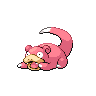

📖 英語版の図鑑説明
When this Pokémon’s tail is soaked in water, sweetness seeps from it. Slowpoke uses this trait to lure in and fish up other Pokémon.
日本語訳
このポケモンの尻尾が水に浸かると、甘い香りが滲み出る。ヤドンはこの特性を利用して他のポケモンをおびき寄せ、釣り上げる。
📝 この図鑑文に出てくる英単語
| 英単語 | 意味 | 品詞 | レベル |
|---|---|---|---|
| soaked | びしょぬれの | 形容詞 | 大学 |
| sweetness | 甘さ | 名詞 | 高校 |
| seeps | しみ出る | 動詞 | 大学 |
| trait | 特徴 | 名詞 | 大学 |
| lure | おびき寄せる | 動詞 | 大学 |
文法ポイント to lure は「〜するために」と目的を表す不定詞です。
when 〜 は「〜するとき」という意味の接続詞。when のまとまりが、もう一方の文がいつ起こるかを表しています。
💡 英語名「Slowpoke」の由来
ドイツ語の名前は「Flegmon」で、怪物から作られている。
出典 Bulbapedia
✨ ヤドンの豆知識
ガラルのヤドンは配信された当初、まだ進化できないのに「しんかのきせき」の効果を受けていた。進化先のデータだけ先に組み込まれていたためと考えられている。
出典 Bulbapedia
📊 ヤドンの種族値
HP90
こうげき65
ぼうぎょ65
とくこう40
とくぼう40
すばやさ15
合計 315
❓ よくある質問
- ヤドンの英語名は？
- ヤドンの英語名は「Slowpoke」です。
- ヤドンの英語名「Slowpoke」の由来は？
- ドイツ語の名前は「Flegmon」で、怪物から作られている。
- ヤドンは英語版の図鑑でどう説明されている？
- 「When this Pokémon’s tail is soaked in water, sweetness seeps from it. Slowpoke uses this trait to lure in and fish up other Pokémon.」と書かれています。日本語にすると「このポケモンの尻尾が水に浸かると、甘い香りが滲み出る。ヤドンはこの特性を利用して他のポケモンをおびき寄せ、釣り上げる。」という意味です。
ヤドンは第1世代（カントー地方）のポケモンです。第1世代（カントー地方）の英語名一覧 →